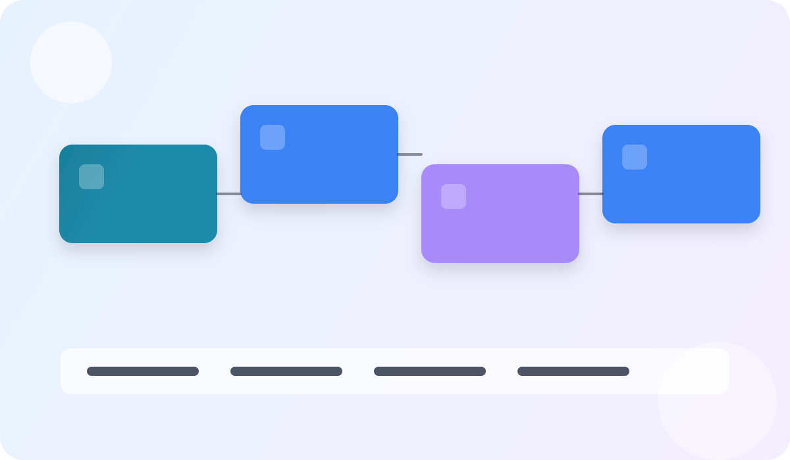

Status geral
0 de 16 páginas já concluídas
Curso Profissional + Pós-graduação
Formação aplicada para gestores e equipes administrativas que precisam implementar IA com método, governança e foco em resultado operacional.
Painel de aprendizagem
Próxima recomendação: Introdução
Status geral
0 de 16 páginas já concluídas
Modo recomendado
Leitura focada + execução em blocos curtos
Meta da semana
Concluir 2 módulos e validar 1 caso real
Do fundamento à escala executiva.
Prompts e checklists prontos para uso.
Ganho com governança e evidência.

Guia rapido de alto desempenho
Profissionais de administração, donos de negócio, analistas e equipes operacionais que desejam aplicar IA em rotinas reais sem depender de conhecimento técnico avançado.
Fundamentos de IA, aplicação em RH/Marketing/Financeiro/Operações, automação de tarefas, uso de ferramentas e estrutura de governança ética.
Leitura guiada com navegação sequencial, exercícios práticos, checklist de implementação e prompts copiáveis para usar no mesmo dia.
O que você precisa para aproveitar ao máximo este curso.
Conhecimento básico de administração
Familiaridade com processos empresariais e rotinas administrativas
Acesso à internet e computador
Para testar ferramentas de IA e acessar plataformas mencionadas
Inglês básico (opcional)
Facilita o uso de algumas ferramentas, mas não é obrigatório
Experiência em gestão (para trilha premium)
Recomendado para aproveitar os módulos de pós-graduação
Uma amostra do que você vai aprender em cada módulo.
Siga esta sequência para transformar teoria em resultado operacional.
Fase 1: Entendimento
Introdução + Módulo 1. Você aprende conceitos, vocabulário e diferencia IA, ML e Deep Learning sem jargão excessivo.
Fase 2: Aplicação
Módulos 2, 3 e 4. Você aplica IA em áreas administrativas com exemplos reais e mini tutoriais orientados.
Fase 3: Governança
Módulo 5. Você estrutura práticas de ética, privacidade e mitigação de risco para uso seguro de IA.
Fase 4: Execução
Módulo 6, Exercícios, Checklist e Conclusão. Você valida ganhos e monta plano de implantação para os próximos 90 dias.
Fase 5: Pós-graduação e excelência executiva
Módulo 7, Módulo 8 e Exercícios Avançados. Você entra em teoria avançada, inferência causal, arquitetura corporativa, modelagem financeira e defesa de escala em banca técnica.
Use os cenarios abaixo para definir prioridade de implantacao no seu contexto.
Cenario 1
Automacao de conciliacao e classificacao documental com conferencias humanas por amostra.
Meta didatica: reduzir retrabalho em 25%
Cenario 2
Triagem inicial de curriculos e respostas assistidas para duvidas recorrentes de colaboradores.
Meta didatica: ganhar 8h semanais da equipe
Cenario 3
Previsao de demanda e alertas de ruptura para ajustar reposicao com base em historico.
Meta didatica: reduzir faltas em 15%
Estrutura completa com jornada profissional e aprofundamento de pós-graduação para nível premium.
| Etapa | Foco | Carga horária | Entrega principal |
|---|---|---|---|
| Introdução | Fundamentos e contexto de mercado | 6h | Diagnóstico inicial de oportunidades |
| Módulos 1 a 3 | Base técnica e aplicação por área | 34h | Plano tático por processo administrativo |
| Módulos 4 a 6 | Ferramentas, ética e casos reais | 30h | Protótipo operacional com métricas |
| Exercícios + Checklist + Conclusão | Avaliação, implantação e consolidação | 14h | Plano de implementação em 90 dias |
| Módulo 7 (Pós) | Seminário avançado de teoria e métodos | 28h | Dossiê executivo com inferência causal |
| Módulo 8 (Pós) | Arquitetura corporativa e escala | 28h | Defesa em banca técnica + plano de 12 meses |
Veja como profissionais aplicaram o conhecimento na prática.
"Implementamos chatbot de RH em 30 dias e reduzimos 60% das perguntas repetitivas. O módulo de prompts foi essencial para treinar a equipe sem contratar consultoria externa."
Maria Clara Santos
Gerente de RH, Empresa de Logística (450 funcionários)
"A trilha premium me preparou para defender um projeto de IA de R$ 2M na diretoria. O framework de ROI e governança foi decisivo para aprovação do budget."
Roberto Almeida
Diretor de Operações, Indústria Farmacêutica
"Automatizei análise de NPS e relatórios de marketing com IA. Ganho de 15h/semana que agora uso para estratégia. O checklist de implementação foi meu guia."
Juliana Ferreira
Analista de Marketing, Startup de EdTech
"Como dono de PME, achei que IA era só para grandes empresas. Este curso me mostrou ferramentas acessíveis que já estão gerando resultado no financeiro e vendas."
Paulo Silva
Proprietário, Distribuidora Regional (35 funcionários)
Comprove seu conhecimento e destaque-se no mercado.
Certificado de Conclusão (Trilha Base - 84h)
Emitido após completar todos os módulos 1-6, exercícios práticos e checklist de implementação. Válido como comprovante de capacitação profissional.
Certificado Premium de Pós-graduação (140h)
Emitido após defesa de dossiê executivo em banca técnica, com aprovação de rigor metodológico. Inclui menção de excelência para notas acima de 9.0.
Badge Digital Verificável
Compartilhe no LinkedIn e portfólios profissionais. Inclui QR code para validação de autenticidade e link para verificação online.
Critérios de avaliação: Exercícios práticos (40%), projeto de implementação (30%), defesa técnica - apenas premium (30%). Nota mínima para certificação: 7.0
Seleção prática para produtividade administrativa, análise e automação em cenários reais.
Produção de relatórios, revisão de políticas e estruturação de análises executivas.
Excelente para análise de documentos longos, síntese crítica e planejamento estratégico.
Apoio rápido para pesquisas, ideação de processos e criação de materiais internos.
Criação visual para apresentações, campanhas e comunicação corporativa de alto impacto.
Pesquisa com foco em referências e apoio para benchmark de mercado com rastreabilidade.
Automação de scripts, planilhas e integrações para times com demandas técnicas leves.
Escolha o nível que melhor se ajusta ao seu objetivo profissional atual.
| Recurso | Trilha Base (84h) | Trilha Premium (140h) |
|---|---|---|
| Módulos incluídos | Introdução + Módulos 1 a 6 | Introdução + Módulos 1 a 8 + trilha avançada |
| Exercícios | Objetivas, estudos de caso e labs base | Tudo da base + exercícios avançados e capstones |
| Certificação | Certificado profissional de conclusão | Certificado premium com menção de banca técnica |
| Suporte de estudo | Guias, prompts e checklist de implementação | Guias + trilha metodológica + mentoria de defesa |
| Banca técnica | Não incluída | Incluída com rubrica de rigor acadêmico |
| Projeto final | Plano de implementação em 90 dias | Dossiê executivo de escala em 12 meses |
| Investimento sugerido* | Entrada recomendada para aplicação prática rápida | Faixa premium para formação com profundidade de pós-graduação |
*Valores podem variar conforme o formato de oferta e acompanhamento escolhido.
Três possibilidades para organizar sua agenda sem perder consistência.
35h/semana
12h/semana
6h/semana
Depende da trilha: base em ~10 semanas e premium em ~16 semanas no ritmo recomendado.
Não. A trilha foi estruturada para gestores e analistas sem foco em desenvolvimento de software.
Você consegue começar com ferramentas gratuitas e freemium. Recursos avançados podem exigir plano pago.
Sim. A trilha base já entrega aplicação real em administração. A premium aprofunda método e escala executiva.
Na trilha premium, o aluno apresenta dossiê executivo com método, evidência e viabilidade para avaliação por rubrica.
O material inclui guias detalhados, prompts e checklists. No formato premium, há suporte estruturado para defesa final.
O certificado comprova carga horária e competências desenvolvidas para aplicação profissional em IA administrativa.
As condições dependem do modelo comercial adotado na oferta. A recomendação é escolher a trilha alinhada ao seu momento.
Para lideranças e especialistas com foco em escala e governança, a trilha premium tende a gerar maior retorno.
Indicadores de referência da metodologia aplicada em contextos administrativos.
+5.000
Profissionais capacitados
87%
Implementaram IA em 30 dias
12h
Economia média por semana
4.8/5.0
Avaliação média
92%
Taxa de conclusão
Termos essenciais para leitura fluida dos módulos e discussões técnicas.
IA: sistemas que simulam capacidades cognitivas em tarefas específicas.
ML: técnicas que aprendem padrões a partir de dados históricos.
Deep Learning: redes neurais profundas para problemas de alta complexidade.
NLP: processamento de linguagem natural para texto e voz.
LLM: modelo de linguagem de grande escala para geração e análise textual.
Prompt: instrução estruturada para orientar resposta do modelo.
Fine-tuning: ajuste especializado de modelo com dados de domínio.
RAG: geração com recuperação de contexto documental confiável.
Embedding: representação vetorial semântica de textos e objetos.
Hallucination: resposta incorreta gerada com alta confiança aparente.
MLOps: práticas de operação, monitoramento e versionamento de modelos.
Drift: mudança do padrão de dados que reduz desempenho do sistema.
Prompts prontos organizados por área funcional para acelerar execução.
RH 1: Triagem inicial de currículos
Atue como analista de recrutamento. Classifique os currículos abaixo por aderência à vaga [cargo], usando critérios: experiência, competências técnicas, competências comportamentais e potencial de desenvolvimento. Gere ranking com justificativa objetiva.
RH 2: Plano de onboarding de 30 dias
Crie um plano de onboarding de 30 dias para o cargo [cargo], com trilha semanal, metas, indicadores de adaptação e checkpoints com gestor. Entregue em formato de tabela com responsáveis e prazos.
RH 3: Diagnóstico de risco de turnover
Com base nos indicadores abaixo, identifique fatores de risco de turnover por equipe e proponha 5 ações de retenção priorizadas por impacto e custo de implementação.
Descubra seu nível de conhecimento em IA e a trilha mais indicada para você.
Estime rapidamente o potencial de economia anual com automação assistida por IA.
Materiais extras para aprofundar repertório técnico e estratégico.
Tendências e pesquisas aplicadas à transformação com IA.
Aulas e debates de mercado para atualização contínua.
Troca de experiências com profissionais e grupos de estudo.
Resumo semanal com ferramentas, frameworks e cases.
Conteúdo em áudio para manter ritmo de aprendizado.
Modelos e exemplos para automação e experimentação.
Empresas Fortune 500, startups e PMEs confiam neste conteúdo.
Logos ilustrativos para representação visual de social proof.
30 dias de garantia
Período recomendado para validar aderência da metodologia ao seu contexto.
Acesso vitalício ao conteúdo
Revisite módulos, prompts e materiais sempre que necessário.
Atualizações gratuitas
Novos frameworks e boas práticas podem ser incorporados sem custo adicional.
Suporte por email
Canal recomendado para dúvidas de aplicação e direcionamento da trilha.
Comece agora sua jornada de 140 horas e torne-se referência em IA aplicada à administração.
Aplicacao pratica para transformar teoria de Capa em ganho operacional mensuravel.
Mapeie o fluxo atual de priorizacao de casos de uso e identifique gargalos de tempo, custo e retrabalho.
Evidencia: mapa AS-IS com 3 gargalos priorizados.
Desenhe um piloto de 2 semanas para estrategia inicial de IA corporativa, com escopo controlado e checkpoints diarios.
Evidencia: plano de execucao com dono, prazo e criterio de parada.
Defina baseline e metas para tempo para gerar valor, comparando antes vs depois com o mesmo periodo.
Evidencia: painel simples com 3 KPIs e tendencia semanal.
Implemente regras de revisao humana, classificacao de dados e trilha de auditoria das decisoes.
Evidencia: checklist de risco com responsaveis e frequencia de revisao.
Planeje extensao para um segundo processo mantendo qualidade, custo sob controle e aprendizagem da equipe.
Evidencia: roadmap 30-60-90 dias com marco de escala.
Prompts curados para acelerar analise, decisao e implantacao com foco em Capa.
Prompt 1: Diagnostico executivo
Atue como consultor de estrategia inicial de IA corporativa. Faça um diagnostico rapido do processo [priorizacao de casos de uso] com 5 gargalos, impacto estimado e prioridade de ataque.
Prompt 2: Plano 30-60-90
Monte um plano 30-60-90 dias para implementar IA em [priorizacao de casos de uso] incluindo objetivos, entregas por fase, donos e riscos.
Prompt 3: KPIs e baseline
Defina um modelo de medicao para [tempo para gerar valor] com baseline, meta trimestral, formula e frequencia de acompanhamento.
Prompt 4: Governanca minima
Crie uma politica minima de uso de IA para este contexto com regras de dados, revisao humana, aprovacao e auditoria.
Prompt 5: Escala com controle
Proponha como escalar o piloto para outra area sem perder qualidade, informando criterios de readiness e plano de capacitacao.
Copie e adapte para sua realidade. Pressione o botão para copiar direto para a área de transferência.
Prompt: Listar os 3 processos administrativos com maior impacto para automação
Com base no contexto abaixo, liste os 3 processos administrativos com maior potencial de ganho com IA, classificando por: 1) impacto direto em tempo/custo, 2) disponibilidade de dados iniciais, 3) tempo até resultado (30-60-90 dias), 4) risco operacional. Contexto: - Setor: [seu setor] - Tamanho da operação: [X colaboradores] - Processos atuais: [principais fluxos administrativos] - Dores principais: [maior desafio hoje] Para cada processo, forneça recomendação de ferramenta inicial (ChatGPT, Claude ou Gemini) e risco de falha esperado.
Prompt: Desenhar piloto de 30 dias com métrica e critério de sucesso
Desenhe um piloto de 30 dias para automação de [processo escolhido] com IA incluindo: 1. Fluxo AS-IS (como funciona hoje) 2. Fluxo TO-BE (como funcionará com IA) 3. Dados necessários e qualidade esperada 4. Checkpoint semanal para monitoramento 5. Critério de parada (quando pausar o piloto) 6. Métrica de sucesso (redução de tempo %, taxa de erro %, economia R$) 7. Plano de comunicação para equipe Contexto do processo: - Volume mensal: [X transações] - Tempo atual por unidade: [X minutos] - Taxa de retrabalho: [X%] - Equipe envolvida: [tamanho e perfil]
Prompt: Roteiro de escala de 90-180 dias após validação do piloto
Após validar o piloto com sucesso, monte um roadmap de escala para 90-180 dias incluindo: 1. Segunda e terceira áreas para automação (RH, Financeiro, Operações) 2. Timeline de rollout com dependências 3. Replanejamento de equipe (redução de horas manuais, reskilling necessário) 4. Centro de excelência em IA para governa a uso corporativo 5. Investimento estimado em ferramentas e gente vs economias proyectadas 6. Definição de "Comitê de IA" com responsáveis por aprovação, risco e inovação Dados de entrada: - Pilotos validados até agora: [processos já testados] - Ganho agregado alcançado: [economias totalizadas] - Equipes atuais disponíveis: [disposição/capacidade] - Orçamento disponível: [R$ ou range]